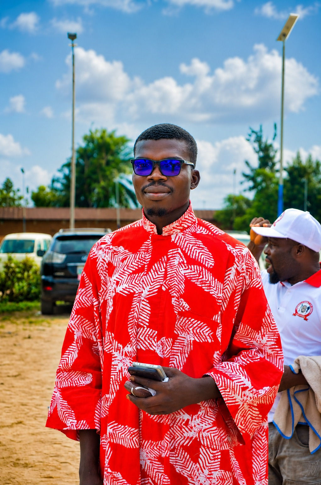

The Voices Behind The Mic

Sylvester Joshua Ighodaro
Founder & HostEntrepreneur, Business Strategist, Real Estate Professional, Marketer. At the heart of 69 Sense is Sylvester, an entrepreneur with experience spanning real estate, sales, marketing, business development and technology-driven solutions.
He is the CEO of OgaAgent, a Nigerian property platform focused on connecting people with legitimate and verified properties for sale and rent, while helping property seekers navigate the search and acquisition process.
But 69 Sense isn't a real-estate podcast. It is a space where Sylvester brings his experiences from business, entrepreneurship, relationships, society, money, lifestyle, personal growth and everyday life into open and sometimes unconventional conversations.

Pastor Ehimare Ejaye (E. E. Joshua)
Co-FounderLead Priest, House of Publishers. Televangelist, Gospel Minister. Through his ministry, he has committed himself to sharing the Word of God, inspiring faith, encouraging people through life's challenges and using media to reach people beyond the walls of a physical church.
One of the expressions of his ministry is Victory at Midnight Prayers - a daily night prayer meeting held Monday to Friday, creating an opportunity for people to seek God, pray, receive encouragement and begin each new day with renewed faith and expectation.
Through his preaching, teachings, prayers and digital ministry, Pastor E. E. Joshua continues to use platforms such as YouTube and other digital channels to communicate messages of faith, purpose, hope and spiritual growth.